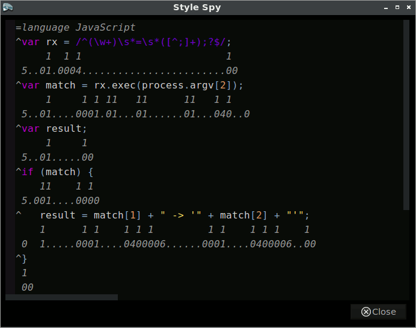

A Komodo Edit extension for spying on editor styles.
Style Spy is an extension for Komodo IDE and Komodo Edit. It simplifies debugging and prototyping styles used in the Komodo editor.
The extension XPI and source are available to download on this page.
Once installed, the extension adds a new Style Spy menu under the main Tools menu.
The best place to learn about Style Spy is in Style Spy itself.
Open the Help item under the Tools → Style Spy menu to read about functionality.
Here is a brief animation showing Style Spy in use. 
Building Style Spy requires the CoffeeScript compiler available from the environment PATH and an installation of Komodo Edit or IDE.
The ko-stylespy repository includes Komodo macros that build the extension.
Just clone the repo, open a new Komodo project from within the ko-stylespy directory, and run the macros from the Komodo toolbox.
Report bugs, make enhancement requests, or ask questions at https://github.com/ervumlens/ko-stylespy/issues . Just click on the big "New Issue" button.
Thanks to Komodo Edit's developers and contributors, past and present, for making an editor that's enjoyable to use.
Thanks to Jeremy Ashkenas for creating CoffeeScript.